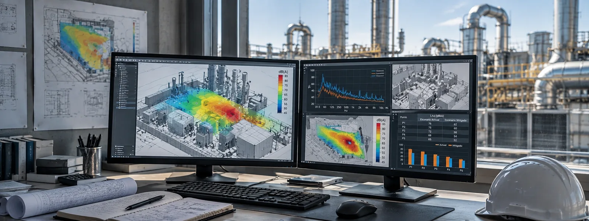
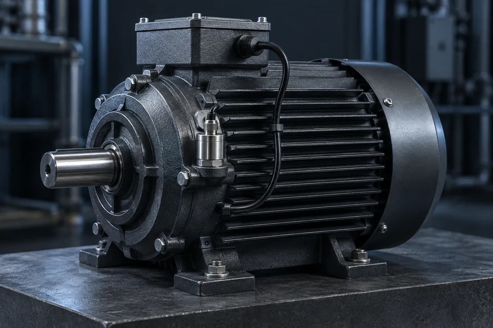
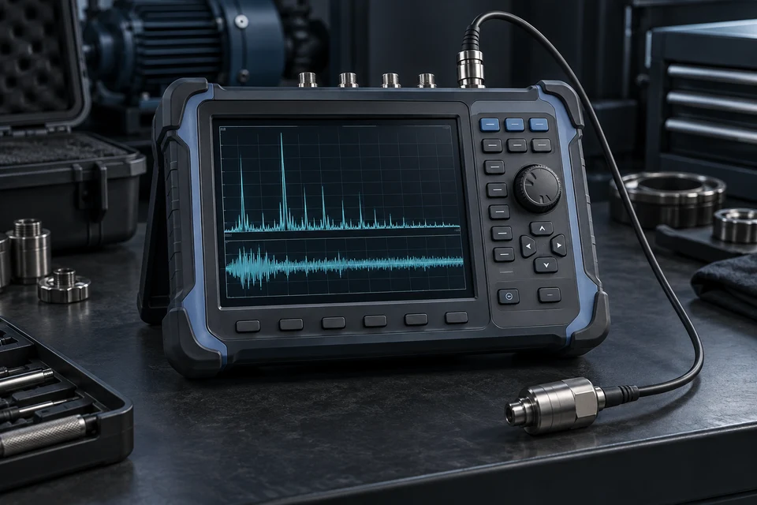
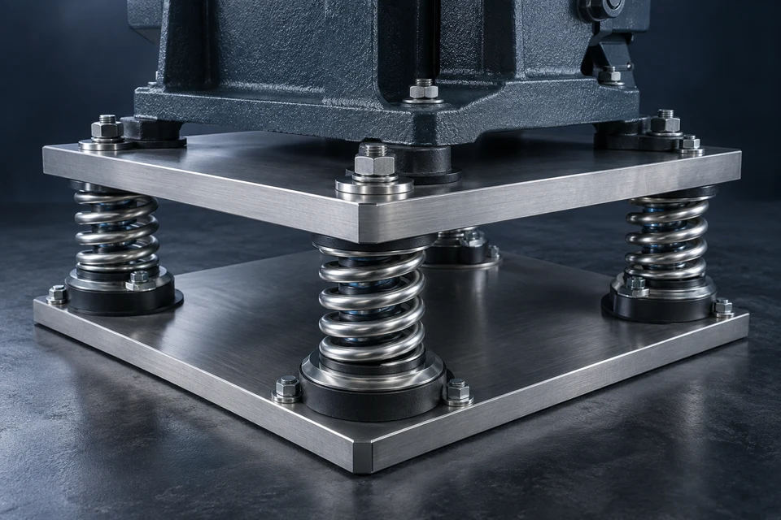
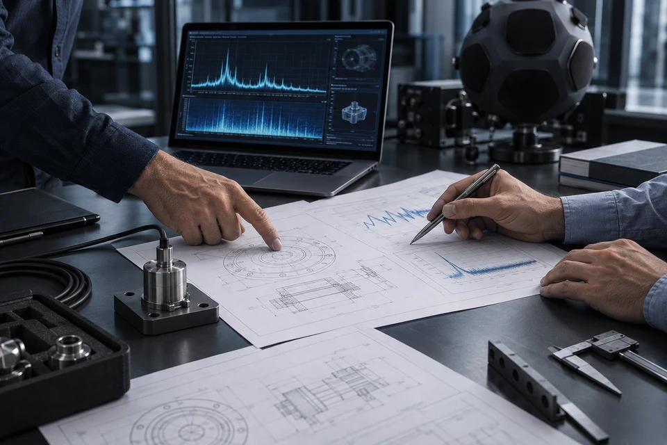
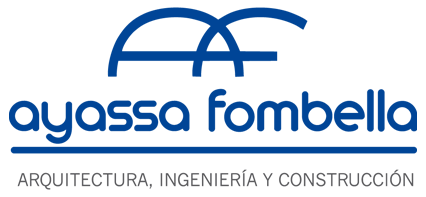

Reclamos de vecinos
Ruido generado por la operación que afecta el entorno, genera conflictos o compromete el cumplimiento normativo.
Diagnóstico, análisis y control de ruido y vibraciones para plantas industriales.
Hablemos de tu plantaVer cómo trabajamosEn entornos industriales, los problemas de ruido y vibraciones rara vez tienen una causa única. Analizamos cada situación para identificar fuentes, evaluar alternativas y definir planes de mitigación técnicamente viables antes de invertir en una solución.
En una planta industrial, el ruido rara vez depende de una única fuente. Equipos, procesos, ventilación, estructuras y condiciones de operación pueden intervenir simultáneamente. Antes de definir una medida de control, es necesario entender qué genera el problema y dónde conviene actuar.
Ruido generado por la operación que afecta el entorno, genera conflictos o compromete el cumplimiento normativo.
Sectores o trabajadores expuestos a niveles elevados de ruido que requieren identificar las fuentes dominantes y reducir su incidencia.
Cambios de proceso o incorporación de maquinaria que pueden modificar las condiciones acústicas y conviene evaluar antes de su puesta en marcha.
Procesos donde intervienen varios equipos simultáneamente y no resulta evidente qué fuente tiene mayor impacto.
Encapsulados, barreras, silenciadores u otras medidas implementadas que no alcanzaron la reducción esperada.
Necesidad de comparar alternativas y definir dónde intervenir primero para obtener el mayor impacto técnico.
El primer paso no es elegir una solución: es entender correctamente el problema.
Abordamos cada problema a partir del diagnóstico de las fuentes y los caminos de transmisión, combinando mediciones de ruido y vibraciones, análisis, modelado acústico y diseño de soluciones de mitigación.
A partir de esa información definimos medidas de aislamiento acústico, encapsulado, barreras acústicas, silenciadores y tratamientos específicos, priorizando aquellas alternativas que permitan alcanzar el objetivo técnico con una inversión justificada.

Del diagnóstico a una decisión técnicamente fundamentada.




Entendemos el proceso, las fuentes involucradas, las condiciones operativas y el objetivo que se busca alcanzar.
Realizamos las mediciones necesarias y caracterizamos las fuentes, los niveles y los principales caminos de transmisión.
Modelamos escenarios y comparamos posibles medidas de control para identificar las soluciones técnicamente más adecuadas.
Establecemos prioridades, criterios técnicos y recomendaciones para avanzar con una solución viable y justificada.
Cada proyecto se aborda con un proceso claro, trazable y adaptable a la complejidad de cada planta.
Más de 15 años de experiencia en ingeniería acústica, especialización en ruido y vibraciones, criterio técnico independiente y una metodología clara para abordar cada problema antes de definir una solución.
A lo largo de nuestra trayectoria profesional hemos participado en proyectos de ingeniería acústica para empresas y plantas de distintas industrias, abordando problemáticas de ruido ambiental, exposición ocupacional, procesos productivos, nuevas instalaciones y sistemas de mitigación.

Oil & Gas · Minería · Automotriz · Farmacéutica · Papel y Packaging · Telecomunicaciones · Energía · Industria general
Cada proyecto tiene sus particularidades. Empecemos por resolver las dudas más habituales.
Conversemos sobre tu casoCuando el problema ya existe, las mediciones suelen ser necesarias para caracterizar la situación real, identificar las fuentes dominantes y definir con mayor precisión dónde conviene intervenir. Cuando se trabaja de forma preventiva, por ejemplo ante una ampliación, incorporación de equipos o un proyecto nuevo, es posible estimar niveles y evaluar escenarios mediante simulaciones y modelado acústico por software antes de ejecutar la intervención.
Nuestra base operativa se encuentra en Buenos Aires, pero trabajamos en plantas y proyectos de toda la región, adaptando cada intervención a las necesidades del proyecto y contemplando los traslados y actividades en sitio cuando son necesarios.
Sí. Podemos analizar técnicamente soluciones existentes o propuestas por terceros para estimar su desempeño, detectar posibles limitaciones y evaluar si resultan adecuadas para el problema que se busca resolver.
Analizamos el problema, evaluamos alternativas y te ayudamos a definir el próximo paso técnico.
¿Tenés un proyecto o necesitás resolver un problema técnico? Contanos brevemente la situación y coordinemos una conversación.
Proyectos en todo el país.